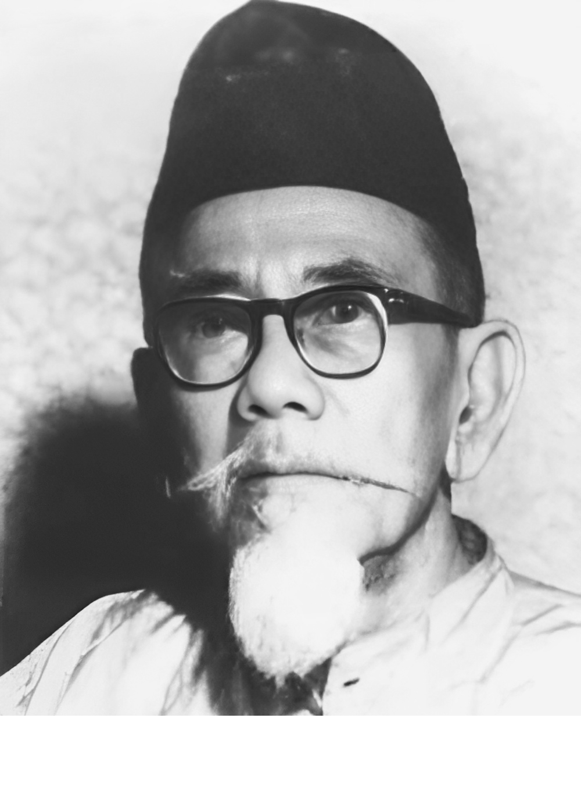
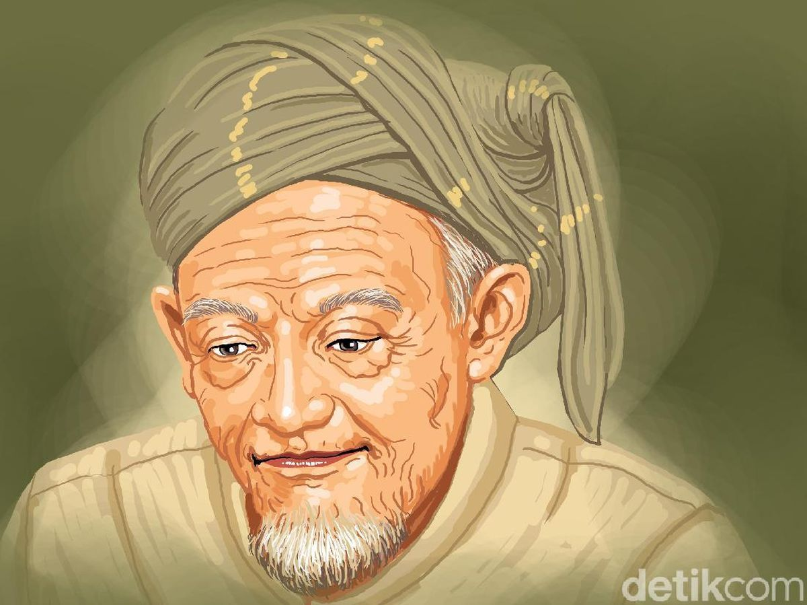
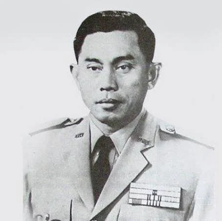
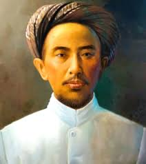
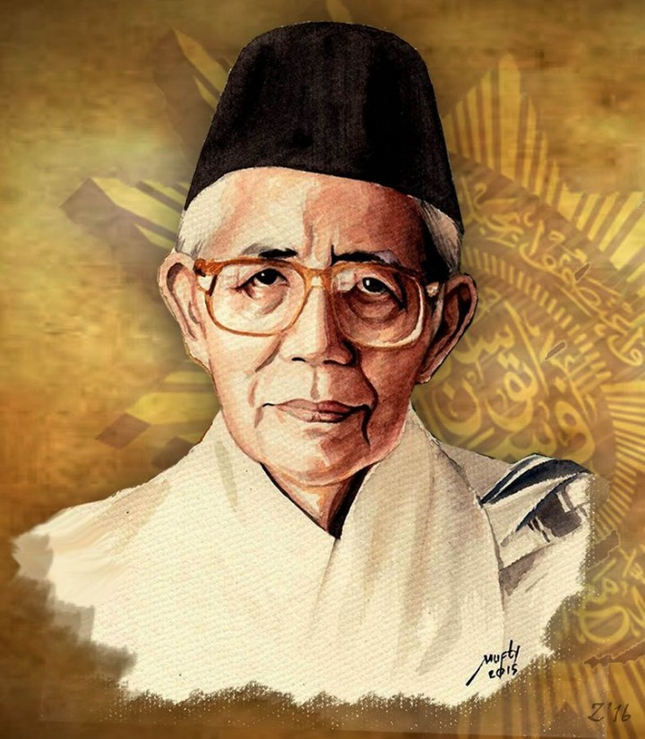

Haji Agus Salim
Biografi
Lahir di Minangkabau pada 8 Oktober 1884, Haji Agus Salim adalah diplomat, jurnalis, dan pejuang kemerdekaan. Ia dikenal sebagai "The Grand Old Man" karena perannya yang luas di bidang diplomasi dan agama.
Wilayah Dakwah
Aktif berdakwah secara nasional melalui organisasi Sarekat Islam dan dalam berbagai forum internasional sebagai delegasi Indonesia.
Hasil Karya
Banyak menulis artikel di surat kabar dan majalah Islam, serta dikenal sebagai penerjemah dan editor yang mahir dalam berbagai bahasa asing.
Peran dalam Penyebaran Islam
Mengedepankan pemikiran Islam modern dan toleransi. Ia menjadi jembatan antara umat Islam dan pemerintah kolonial serta dunia internasional.

KH. Hasyim Asy'ari
Biografi
Lahir di Jombang tahun 1871, beliau adalah pendiri Nahdlatul Ulama dan tokoh penting dalam dunia pesantren di Indonesia.
Wilayah Dakwah
Jawa Timur dan wilayah Nusantara melalui jaringan pesantren dan NU.
Hasil Karya
Menulis kitab seperti "Adabul Alim wal Muta’allim" dan berbagai risalah tentang fiqih dan akhlak.
Peran dalam Penyebaran Islam
Menguatkan tradisi Islam Ahlus Sunnah wal Jama’ah dan berperan besar dalam melawan kolonialisme melalui Resolusi Jihad 1945.

Jenderal Ahmad Yani
Biografi
Lahir di Purworejo tahun 1922. Seorang perwira tinggi TNI yang gugur dalam peristiwa G30S/PKI tahun 1965.
Wilayah Dakwah
Meski bukan dai formal, Ahmad Yani menunjukkan nilai-nilai Islam dalam kepemimpinan militer yang jujur dan religius.
Hasil Karya
Tidak menulis karya keagamaan, namun kontribusinya pada ketahanan nasional menjadi warisan penting.
Peran dalam Perkembangan Islam
Sebagai pemimpin Muslim, ia menjadi teladan bagi generasi muda tentang integritas, keberanian, dan nilai-nilai Islam dalam kehidupan bernegara.

KH. Ahmad Dahlan
Biografi
Lahir di Yogyakarta tahun 1868. Pendiri Muhammadiyah dan pembaru pemikiran Islam di Indonesia.
Wilayah Dakwah
Yogyakarta dan seluruh wilayah Nusantara melalui lembaga pendidikan dan amal Muhammadiyah.
Hasil Karya
Mendirikan sekolah-sekolah modern Islam dan rumah sakit Islam, serta menulis dan menyebarkan pemikiran reformis Islam.
Peran dalam Pembaharuan Islam
Menggabungkan ajaran Islam dengan ilmu pengetahuan modern. Membuka ruang berpikir maju di kalangan umat.

Mohammad Natsir
Biografi
Lahir di Minangkabau tahun 1908. Tokoh politik dan intelektual Muslim, pernah menjadi Perdana Menteri RI.
Wilayah Dakwah
Tingkat nasional dan internasional melalui organisasi Masyumi dan Konferensi Islam dunia.
Hasil Karya
Menulis ratusan artikel dan buku, termasuk karya monumental “Capita Selecta” tentang Islam dan kebangsaan.
Peran dalam Perkembangan Islam
Mempopulerkan integrasi Islam dan negara dalam wacana politik modern. Menjadi duta Islam Indonesia di forum internasional.